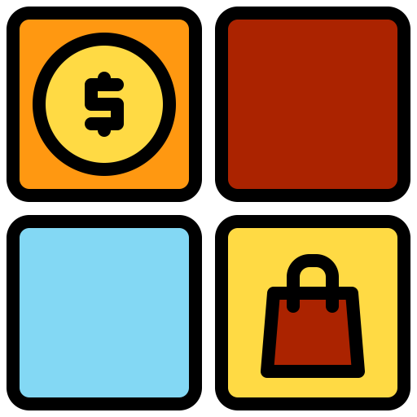

<ion-content class="container transparent-header">
  <!-- <ion-header>
    <ion-toolbar>
      <ion-title>Profile</ion-title>
    </ion-toolbar>
  </ion-header> -->
  <div class="card-profile">
    <div class="card-profile_visual">  </div>
    <div class="card-profile_user-infos">
      <span class="infos_name">{{user.name}}</span>
      <span class="infos_nick">{{user.twitter}}</span>
    <div class="iconedit"> <ion-icon  name="create-outline"></ion-icon> </div>
    </div>

    <ion-segment>

      <ion-segment-button (click)="goNotification()">
        <!--  -->
        <ion-label>Notification</ion-label>
      </ion-segment-button>
      <ion-segment-button (click)="goForsa()">
        <!--  -->
        <ion-label>	Forsa </ion-label>
      </ion-segment-button>
  </ion-segment>
    <!-- <div class="card-profile_user-stats">
      <div class="stats-holder">
        <div class="user-stats">
          <strong>Tweets</strong>
          <span>{{user.tweets}}</span>
        </div>
        <div class="user-stats">
          <strong>Following</strong>
          <span>{{user.following}}</span>
        </div>
        <div class="user-stats">
          <strong>Followers</strong>
          <span>{{user.followers}}</span>
        </div>
      </div>
    </div> -->
    <div  *ngIf="status=='forsa'">
      <ion-card *ngFor="let post of posts">
        <ion-item>
          <ion-avatar item-start>
            
          </ion-avatar>
          <!-- <h2 class="sticky">Forsa</h2> -->
          <p>{{post.code}}</p>
        </ion-item>
        <!--  -->
        <ion-card-content>
          <p>{{post.date}}</p>
        </ion-card-content>
        <!-- <ion-row>
          <ion-col>
            <button ion-button color="purple" clear small icon-left (click)="like(post)">
                <ion-icon name='thumbs-up'></ion-icon>
                {{post.likes}} Likes
              </button>
          </ion-col>
          <ion-col>
            <button ion-button color="purple" clear small icon-left (click)="comment(post)">
                <ion-icon name='text'></ion-icon>
                {{post.comments}} Comments
              </button>
          </ion-col>
          <ion-col align-self-center text-center>
            <p>
              {{post.timestamp}}
            </p>
          </ion-col>
        </ion-row> -->
      </ion-card>
    </div>

    <div  *ngIf="status=='notification'">
      <ion-card *ngFor="let post of posts">
        <ion-item>
          <ion-avatar item-start>
            
          </ion-avatar>
          <h2 class="sticky">{{user.name}}</h2>
          <p>{{post.date}}</p>
        </ion-item>
        <!--  -->
        <ion-card-content>
          <p>{{post.text}}</p>
        </ion-card-content>
        <!-- <ion-row>
          <ion-col>
            <button ion-button color="purple" clear small icon-left (click)="like(post)">
                <ion-icon name='thumbs-up'></ion-icon>
                {{post.likes}} Likes
              </button>
          </ion-col>
          <ion-col>
            <button ion-button color="purple" clear small icon-left (click)="comment(post)">
                <ion-icon name='text'></ion-icon>
                {{post.comments}} Comments
              </button>
          </ion-col>
          <ion-col align-self-center text-center>
            <p>
              {{post.timestamp}}
            </p>
          </ion-col>
        </ion-row> -->
      </ion-card>
    </div>
  </div>
</ion-content>